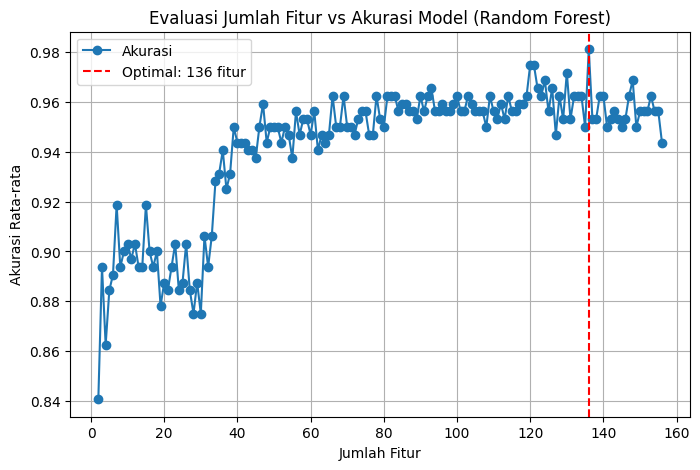

Project Time Series Audio Dataset With MultiLabel#
import os
import pandas as pd
import librosa
import warnings
import tsfel
from tqdm import tqdm
import numpy as np
from sklearn.impute import SimpleImputer
from sklearn.feature_selection import mutual_info_classif
import matplotlib.pyplot as plt
from sklearn.model_selection import train_test_split
from sklearn.metrics import accuracy_score
from sklearn.preprocessing import StandardScaler
from sklearn.decomposition import PCA
from sklearn.metrics import accuracy_score, classification_report
from sklearn.metrics import make_scorer, accuracy_score, recall_score, f1_score, mean_absolute_percentage_error
from sklearn.ensemble import RandomForestClassifier
import joblib
from sklearn.multioutput import MultiOutputClassifier
from sklearn.preprocessing import LabelEncoder
Membaca Dataset#
# -- Mengabaikan peringatan dari librosa terkait format non-wav --
warnings.filterwarnings('ignore', category=UserWarning, module='librosa')
METADATA_PATH = "dataset/metadata_anda.csv"
AUDIO_FOLDER_PATH = "dataset/dataset_wav/"
TARGET_SR = 16000
print(f"Membaca file metadata dari {METADATA_PATH}...")
try:
df_metadata = pd.read_csv(METADATA_PATH)
except FileNotFoundError:
print(f"ERROR: File {METADATA_PATH} tidak ditemukan.")
raise
data_list = []
print(f"Memulai proses pembacaan {len(df_metadata)} file audio dari {AUDIO_FOLDER_PATH}...")
for index, row in tqdm(df_metadata.iterrows(), total=df_metadata.shape[0]):
file_path = os.path.join(AUDIO_FOLDER_PATH, row['file_name'])
try:
audio_signal, sampling_rate = librosa.load(file_path, sr=TARGET_SR)
data_list.append({
'filename': row['file_name'],
'signal': audio_signal,
'sampling_rate': sampling_rate,
'label_buka': row['buka'],
'label_tutup': row['tutup'],
'label_fikri': row['fikri'],
'label_fauzan': row['fauzan']
})
except Exception as e:
print(f"\nWarning: Gagal membaca file {file_path}: {e}")
print(f"\nProses pembacaan data selesai.")
print(f"Total file berhasil dibaca: {len(data_list)}")
if data_list:
print("\nContoh data pertama yang dimuat:")
print(data_list[0])
Membaca file metadata dari dataset/metadata_anda.csv...
Memulai proses pembacaan 400 file audio dari dataset/dataset_wav/...
0%| | 0/400 [00:00<?, ?it/s]
0%|▍ | 1/400 [00:02<14:54, 2.24s/it]
2%|███▍ | 7/400 [00:02<01:38, 4.00it/s]
3%|██████▎ | 13/400 [00:02<00:46, 8.36it/s]
5%|█████████▏ | 19/400 [00:02<00:28, 13.55it/s]
6%|████████████ | 25/400 [00:02<00:19, 19.07it/s]
8%|██████████████▉ | 31/400 [00:02<00:15, 24.57it/s]
9%|█████████████████▊ | 37/400 [00:02<00:11, 30.60it/s]
11%|████████████████████▋ | 43/400 [00:02<00:09, 35.95it/s]
12%|███████████████████████▋ | 49/400 [00:03<00:08, 39.37it/s]
14%|██████████████████████████▌ | 55/400 [00:03<00:07, 44.06it/s]
16%|█████████████████████████████▉ | 62/400 [00:03<00:06, 48.43it/s]
17%|████████████████████████████████▊ | 68/400 [00:03<00:06, 49.24it/s]
18%|███████████████████████████████████▋ | 74/400 [00:03<00:06, 50.58it/s]
20%|███████████████████████████████████████ | 81/400 [00:03<00:05, 53.36it/s]
22%|█████████████████████████████████████████▉ | 87/400 [00:03<00:05, 54.08it/s]
23%|████████████████████████████████████████████▊ | 93/400 [00:03<00:05, 54.95it/s]
25%|████████████████████████████████████████████████ | 100/400 [00:04<00:05, 56.22it/s]
26%|██████████████████████████████████████████████████▉ | 106/400 [00:04<00:05, 54.45it/s]
28%|█████████████████████████████████████████████████████▊ | 112/400 [00:04<00:05, 54.41it/s]
30%|████████████████████████████████████████████████████████▋ | 118/400 [00:04<00:05, 55.35it/s]
31%|███████████████████████████████████████████████████████████▌ | 124/400 [00:04<00:05, 54.92it/s]
32%|██████████████████████████████████████████████████████████████▍ | 130/400 [00:04<00:04, 55.21it/s]
34%|█████████████████████████████████████████████████████████████████▎ | 136/400 [00:04<00:04, 55.80it/s]
36%|████████████████████████████████████████████████████████████████████▏ | 142/400 [00:04<00:04, 56.12it/s]
37%|███████████████████████████████████████████████████████████████████████ | 148/400 [00:04<00:04, 56.74it/s]
38%|█████████████████████████████████████████████████████████████████████████▉ | 154/400 [00:04<00:04, 57.21it/s]
40%|████████████████████████████████████████████████████████████████████████████▊ | 160/400 [00:05<00:04, 57.72it/s]
42%|███████████████████████████████████████████████████████████████████████████████▋ | 166/400 [00:05<00:04, 57.57it/s]
43%|███████████████████████████████████████████████████████████████████████████████████ | 173/400 [00:05<00:03, 59.07it/s]
45%|█████████████████████████████████████████████████████████████████████████████████████▉ | 179/400 [00:05<00:03, 56.36it/s]
46%|█████████████████████████████████████████████████████████████████████████████████████████▎ | 186/400 [00:05<00:03, 58.91it/s]
48%|████████████████████████████████████████████████████████████████████████████████████████████▏ | 192/400 [00:05<00:03, 58.22it/s]
50%|███████████████████████████████████████████████████████████████████████████████████████████████ | 198/400 [00:05<00:03, 55.35it/s]
51%|██████████████████████████████████████████████████████████████████████████████████████████████████▍ | 205/400 [00:05<00:03, 57.91it/s]
53%|█████████████████████████████████████████████████████████████████████████████████████████████████████▎ | 211/400 [00:05<00:03, 57.49it/s]
54%|████████████████████████████████████████████████████████████████████████████████████████████████████████▏ | 217/400 [00:06<00:03, 55.49it/s]
56%|███████████████████████████████████████████████████████████████████████████████████████████████████████████ | 223/400 [00:06<00:03, 54.81it/s]
57%|█████████████████████████████████████████████████████████████████████████████████████████████████████████████▉ | 229/400 [00:06<00:03, 54.70it/s]
59%|████████████████████████████████████████████████████████████████████████████████████████████████████████████████▊ | 235/400 [00:06<00:03, 54.31it/s]
60%|████████████████████████████████████████████████████████████████████████████████████████████████████████████████████▏ | 242/400 [00:06<00:02, 56.91it/s]
62%|███████████████████████████████████████████████████████████████████████████████████████████████████████████████████████ | 248/400 [00:06<00:02, 57.09it/s]
64%|█████████████████████████████████████████████████████████████████████████████████████████████████████████████████████████▉ | 254/400 [00:06<00:02, 56.68it/s]
65%|████████████████████████████████████████████████████████████████████████████████████████████████████████████████████████████▊ | 260/400 [00:06<00:02, 56.28it/s]
66%|███████████████████████████████████████████████████████████████████████████████████████████████████████████████████████████████▋ | 266/400 [00:06<00:02, 56.01it/s]
68%|███████████████████████████████████████████████████████████████████████████████████████████████████████████████████████████████████ | 273/400 [00:07<00:02, 57.94it/s]
70%|█████████████████████████████████████████████████████████████████████████████████████████████████████████████████████████████████████▉ | 279/400 [00:07<00:02, 57.28it/s]
71%|████████████████████████████████████████████████████████████████████████████████████████████████████████████████████████████████████████▊ | 285/400 [00:07<00:02, 56.11it/s]
73%|███████████████████████████████████████████████████████████████████████████████████████████████████████████████████████████████████████████▋ | 291/400 [00:07<00:01, 55.11it/s]
74%|███████████████████████████████████████████████████████████████████████████████████████████████████████████████████████████████████████████████ | 298/400 [00:07<00:01, 57.42it/s]
76%|█████████████████████████████████████████████████████████████████████████████████████████████████████████████████████████████████████████████████▉ | 304/400 [00:07<00:01, 57.49it/s]
78%|████████████████████████████████████████████████████████████████████████████████████████████████████████████████████████████████████████████████████▊ | 310/400 [00:07<00:01, 57.05it/s]
79%|████████████████████████████████████████████████████████████████████████████████████████████████████████████████████████████████████████████████████████▏ | 317/400 [00:07<00:01, 58.38it/s]
81%|███████████████████████████████████████████████████████████████████████████████████████████████████████████████████████████████████████████████████████████ | 323/400 [00:07<00:01, 58.43it/s]
82%|█████████████████████████████████████████████████████████████████████████████████████████████████████████████████████████████████████████████████████████████▉ | 329/400 [00:08<00:01, 54.75it/s]
84%|█████████████████████████████████████████████████████████████████████████████████████████████████████████████████████████████████████████████████████████████████▎ | 336/400 [00:08<00:01, 56.59it/s]
86%|████████████████████████████████████████████████████████████████████████████████████████████████████████████████████████████████████████████████████████████████████▋ | 343/400 [00:08<00:00, 57.33it/s]
88%|████████████████████████████████████████████████████████████████████████████████████████████████████████████████████████████████████████████████████████████████████████ | 350/400 [00:08<00:00, 59.15it/s]
89%|██████████████████████████████████████████████████████████████████████████████████████████████████████████████████████████████████████████████████████████████████████████▉ | 356/400 [00:08<00:00, 58.43it/s]
90%|█████████████████████████████████████████████████████████████████████████████████████████████████████████████████████████████████████████████████████████████████████████████▊ | 362/400 [00:08<00:00, 58.06it/s]
92%|████████████████████████████████████████████████████████████████████████████████████████████████████████████████████████████████████████████████████████████████████████████████▋ | 368/400 [00:08<00:00, 58.46it/s]
94%|████████████████████████████████████████████████████████████████████████████████████████████████████████████████████████████████████████████████████████████████████████████████████ | 375/400 [00:08<00:00, 59.85it/s]
95%|██████████████████████████████████████████████████████████████████████████████████████████████████████████████████████████████████████████████████████████████████████████████████████▉ | 381/400 [00:08<00:00, 58.80it/s]
97%|█████████████████████████████████████████████████████████████████████████████████████████████████████████████████████████████████████████████████████████████████████████████████████████▊ | 387/400 [00:09<00:00, 58.44it/s]
98%|████████████████████████████████████████████████████████████████████████████████████████████████████████████████████████████████████████████████████████████████████████████████████████████▋ | 393/400 [00:09<00:00, 57.85it/s]
100%|███████████████████████████████████████████████████████████████████████████████████████████████████████████████████████████████████████████████████████████████████████████████████████████████▌| 399/400 [00:09<00:00, 56.26it/s]
100%|████████████████████████████████████████████████████████████████████████████████████████████████████████████████████████████████████████████████████████████████████████████████████████████████| 400/400 [00:09<00:00, 43.09it/s]
Proses pembacaan data selesai.
Total file berhasil dibaca: 400
Contoh data pertama yang dimuat:
{'filename': 'voice-recorder-2025-11-02--13-08-14.wav', 'signal': array([ 0. , 0. , 0. , ..., -0.00015259,
-0.00039673, -0.00042725], shape=(57344,), dtype=float32), 'sampling_rate': 16000, 'label_buka': 1, 'label_tutup': 0, 'label_fikri': 1, 'label_fauzan': 0}
Ekstraksi Fitur#
def extract_features_tsfel(data_list):
cfg = tsfel.get_features_by_domain()
feature_dfs = []
print(f"\nMemulai proses ekstraksi fitur TSFEL untuk {len(data_list)} file...\n")
for data in tqdm(data_list, total=len(data_list)):
signal = data['signal']
sr = data['sampling_rate']
try:
features = tsfel.time_series_features_extractor(cfg, signal, fs=sr, verbose=0)
features['filename'] = data['filename']
features['label_buka'] = data['label_buka']
features['label_tutup'] = data['label_tutup']
features['label_fikri'] = data['label_fikri']
features['label_fauzan'] = data['label_fauzan']
feature_dfs.append(features)
except Exception as e:
print(f"\nError saat ekstraksi fitur {data['filename']}: {e}")
if not feature_dfs:
print("Tidak ada fitur yang berhasil diekstrak.")
return pd.DataFrame()
feature_df = pd.concat(feature_dfs, ignore_index=True)
print(f"\nEkstraksi fitur selesai!")
print(f"Total data fitur: {feature_df.shape[0]} baris, {feature_df.shape[1]} kolom")
return feature_df
# --- Bagian Eksekusi ---
if 'data_list' in locals():
print("Menjalankan ekstraksi fitur pada 'data_list' yang sudah dimuat...")
features_df = extract_features_tsfel(data_list)
print("\nContoh 5 baris pertama dari DataFrame fitur (features_df):")
display(features_df.tail())
else:
print("ERROR: Variabel 'data_list' tidak ditemukan. Jalankan ulang Cell 4.")
Menjalankan ekstraksi fitur pada 'data_list' yang sudah dimuat...
Memulai proses ekstraksi fitur TSFEL untuk 400 file...
0%| | 0/400 [00:00<?, ?it/s]
0%|▍ | 1/400 [00:00<02:43, 2.45it/s]
0%|▉ | 2/400 [00:00<02:42, 2.45it/s]
1%|█▍ | 3/400 [00:01<02:45, 2.41it/s]
1%|█▉ | 4/400 [00:01<02:30, 2.63it/s]
1%|██▍ | 5/400 [00:02<02:40, 2.46it/s]
2%|██▉ | 6/400 [00:02<03:56, 1.67it/s]
2%|███▍ | 7/400 [00:03<03:21, 1.95it/s]
2%|███▉ | 8/400 [00:04<03:48, 1.71it/s]
2%|████▎ | 9/400 [00:04<04:26, 1.47it/s]
2%|████▊ | 10/400 [00:05<04:41, 1.38it/s]
3%|█████▎ | 11/400 [00:06<03:46, 1.72it/s]
3%|█████▊ | 12/400 [00:06<03:05, 2.09it/s]
3%|██████▎ | 13/400 [00:06<03:00, 2.14it/s]
4%|██████▊ | 14/400 [00:07<02:46, 2.32it/s]
4%|███████▏ | 15/400 [00:07<02:38, 2.43it/s]
4%|███████▋ | 16/400 [00:07<02:46, 2.30it/s]
4%|████████▏ | 17/400 [00:08<03:48, 1.67it/s]
4%|████████▋ | 18/400 [00:09<03:18, 1.93it/s]
5%|█████████▏ | 19/400 [00:09<03:01, 2.10it/s]
5%|█████████▋ | 20/400 [00:10<03:53, 1.63it/s]
5%|██████████▏ | 21/400 [00:11<03:36, 1.75it/s]
6%|██████████▌ | 22/400 [00:11<04:08, 1.52it/s]
6%|███████████ | 23/400 [00:12<04:59, 1.26it/s]
6%|███████████▌ | 24/400 [00:13<05:08, 1.22it/s]
6%|████████████ | 25/400 [00:14<04:33, 1.37it/s]
6%|████████████▌ | 26/400 [00:15<05:14, 1.19it/s]
7%|█████████████ | 27/400 [00:15<04:13, 1.47it/s]
7%|█████████████▌ | 28/400 [00:16<04:57, 1.25it/s]
7%|█████████████▉ | 29/400 [00:18<05:48, 1.07it/s]
8%|██████████████▍ | 30/400 [00:18<04:46, 1.29it/s]
8%|██████████████▉ | 31/400 [00:19<05:20, 1.15it/s]
8%|███████████████▍ | 32/400 [00:19<04:25, 1.38it/s]
8%|███████████████▉ | 33/400 [00:20<03:53, 1.57it/s]
8%|████████████████▍ | 34/400 [00:21<04:42, 1.30it/s]
9%|████████████████▉ | 35/400 [00:21<03:45, 1.62it/s]
9%|█████████████████▎ | 36/400 [00:22<03:34, 1.70it/s]
9%|█████████████████▊ | 37/400 [00:23<04:00, 1.51it/s]
10%|██████████████████▎ | 38/400 [00:23<03:34, 1.69it/s]
10%|██████████████████▊ | 39/400 [00:24<04:13, 1.43it/s]
10%|███████████████████▎ | 40/400 [00:24<03:18, 1.81it/s]
10%|███████████████████▊ | 41/400 [00:24<02:43, 2.20it/s]
10%|████████████████████▎ | 42/400 [00:26<03:51, 1.54it/s]
11%|████████████████████▋ | 43/400 [00:26<04:10, 1.42it/s]
11%|█████████████████████▏ | 44/400 [00:27<03:36, 1.64it/s]
11%|█████████████████████▋ | 45/400 [00:27<03:33, 1.66it/s]
12%|██████████████████████▏ | 46/400 [00:28<03:16, 1.80it/s]
12%|██████████████████████▋ | 47/400 [00:29<04:12, 1.40it/s]
12%|██████████████████████▋ | 47/400 [00:30<03:45, 1.57it/s]
D:\Perkuliahan\Semester 5\Poyek Sains Data\PSD\venv_py\Lib\site-packages\tsfel\feature_extraction\calc_features.py:195: SyntaxWarning: invalid escape sequence '\*'
\**kwargs:
---------------------------------------------------------------------------
KeyboardInterrupt Traceback (most recent call last)
Cell In[5], line 4
2 if 'data_list' in locals():
3 print("Menjalankan ekstraksi fitur pada 'data_list' yang sudah dimuat...")
----> 4 features_df = extract_features_tsfel(data_list)
6 print("\nContoh 5 baris pertama dari DataFrame fitur (features_df):")
7 display(features_df.tail())
Cell In[4], line 12, in extract_features_tsfel(data_list)
9 sr = data['sampling_rate']
11 try:
---> 12 features = tsfel.time_series_features_extractor(cfg, signal, fs=sr, verbose=0)
14 features['filename'] = data['filename']
15 features['label_buka'] = data['label_buka']
File D:\Perkuliahan\Semester 5\Poyek Sains Data\PSD\venv_py\Lib\site-packages\tsfel\feature_extraction\calc_features.py:379, in time_series_features_extractor(config, timeseries, fs, window_size, overlap, verbose, **kwargs)
374 raise SystemExit(
375 "n_jobs value is not valid. " "Choose an integer value or None for no multiprocessing.",
376 )
377 # single window
378 else:
--> 379 features_final = calc_window_features(
380 config,
381 timeseries,
382 fs,
383 verbose=verbose,
384 features_path=features_path,
385 header_names=names,
386 single_window=True,
387 )
389 # Assuring the same feature extraction order
390 features_final = features_final.reindex(sorted(features_final.columns), axis=1)
File D:\Perkuliahan\Semester 5\Poyek Sains Data\PSD\venv_py\Lib\site-packages\tsfel\feature_extraction\calc_features.py:509, in calc_window_features(config, window, fs, verbose, single_window, **kwargs)
507 # Eval feature results
508 if single_axis:
--> 509 eval_result = feature_funcs[func_total](
510 window,
511 **parameters_total,
512 )
513 eval_result = np.array([eval_result])
515 for ax in range(len(header_names)):
File D:\Perkuliahan\Semester 5\Poyek Sains Data\PSD\venv_py\Lib\site-packages\tsfel\feature_extraction\features.py:1238, in spectral_slope(signal, fs)
1213 @set_domain("domain", "spectral")
1214 def spectral_slope(signal, fs):
1215 """Computes the spectral slope.
1216
1217 Spectral slope is computed by finding constants m and b of the function aFFT = mf + b, obtained by linear regression
(...) 1236 Spectral Slope
1237 """
-> 1238 f, fmag = calc_fft(signal, fs)
1239 sum_fmag = fmag.sum()
1240 dot_ff = (f * f).sum()
File D:\Perkuliahan\Semester 5\Poyek Sains Data\PSD\venv_py\Lib\site-packages\tsfel\feature_extraction\features_utils.py:73, in calc_fft(signal, fs)
55 def calc_fft(signal, fs):
56 """This functions computes the fft of a signal.
57
58 Parameters
(...) 70 Amplitude of the frequency values (yy axis)
71 """
---> 73 fmag = np.abs(np.fft.rfft(signal))
74 f = np.fft.rfftfreq(len(signal), d=1 / fs)
76 return f.copy(), fmag.copy()
File D:\Perkuliahan\Semester 5\Poyek Sains Data\PSD\venv_py\Lib\site-packages\numpy\fft\_pocketfft.py:417, in rfft(a, n, axis, norm, out)
415 if n is None:
416 n = a.shape[axis]
--> 417 output = _raw_fft(a, n, axis, True, True, norm, out=out)
418 return output
File D:\Perkuliahan\Semester 5\Poyek Sains Data\PSD\venv_py\Lib\site-packages\numpy\fft\_pocketfft.py:101, in _raw_fft(a, n, axis, is_real, is_forward, norm, out)
97 elif ((shape := getattr(out, "shape", None)) is not None
98 and (len(shape) != a.ndim or shape[axis] != n_out)):
99 raise ValueError("output array has wrong shape.")
--> 101 return ufunc(a, fct, axes=[(axis,), (), (axis,)], out=out)
KeyboardInterrupt:
for col in features_df.columns:
print(col)
0_Absolute energy
0_Area under the curve
0_Autocorrelation
0_Average power
0_Centroid
0_ECDF Percentile Count_0
0_ECDF Percentile Count_1
0_ECDF Percentile_0
0_ECDF Percentile_1
0_ECDF_0
0_ECDF_1
0_ECDF_2
0_ECDF_3
0_ECDF_4
0_ECDF_5
0_ECDF_6
0_ECDF_7
0_ECDF_8
0_ECDF_9
0_Entropy
0_Fundamental frequency
0_Histogram mode
0_Human range energy
0_Interquartile range
0_Kurtosis
0_LPCC_0
0_LPCC_1
0_LPCC_10
0_LPCC_11
0_LPCC_2
0_LPCC_3
0_LPCC_4
0_LPCC_5
0_LPCC_6
0_LPCC_7
0_LPCC_8
0_LPCC_9
0_MFCC_0
0_MFCC_1
0_MFCC_10
0_MFCC_11
0_MFCC_2
0_MFCC_3
0_MFCC_4
0_MFCC_5
0_MFCC_6
0_MFCC_7
0_MFCC_8
0_MFCC_9
0_Max
0_Max power spectrum
0_Maximum frequency
0_Mean
0_Mean absolute deviation
0_Mean absolute diff
0_Mean diff
0_Median
0_Median absolute deviation
0_Median absolute diff
0_Median diff
0_Median frequency
0_Min
0_Negative turning points
0_Neighbourhood peaks
0_Peak to peak distance
0_Positive turning points
0_Power bandwidth
0_Root mean square
0_Signal distance
0_Skewness
0_Slope
0_Spectral centroid
0_Spectral decrease
0_Spectral distance
0_Spectral entropy
0_Spectral kurtosis
0_Spectral positive turning points
0_Spectral roll-off
0_Spectral roll-on
0_Spectral skewness
0_Spectral slope
0_Spectral spread
0_Spectral variation
0_Spectrogram mean coefficient_0.0Hz
0_Spectrogram mean coefficient_1032.26Hz
0_Spectrogram mean coefficient_1290.32Hz
0_Spectrogram mean coefficient_1548.39Hz
0_Spectrogram mean coefficient_1806.45Hz
0_Spectrogram mean coefficient_2064.52Hz
0_Spectrogram mean coefficient_2322.58Hz
0_Spectrogram mean coefficient_258.06Hz
0_Spectrogram mean coefficient_2580.65Hz
0_Spectrogram mean coefficient_2838.71Hz
0_Spectrogram mean coefficient_3096.77Hz
0_Spectrogram mean coefficient_3354.84Hz
0_Spectrogram mean coefficient_3612.9Hz
0_Spectrogram mean coefficient_3870.97Hz
0_Spectrogram mean coefficient_4129.03Hz
0_Spectrogram mean coefficient_4387.1Hz
0_Spectrogram mean coefficient_4645.16Hz
0_Spectrogram mean coefficient_4903.23Hz
0_Spectrogram mean coefficient_516.13Hz
0_Spectrogram mean coefficient_5161.29Hz
0_Spectrogram mean coefficient_5419.35Hz
0_Spectrogram mean coefficient_5677.42Hz
0_Spectrogram mean coefficient_5935.48Hz
0_Spectrogram mean coefficient_6193.55Hz
0_Spectrogram mean coefficient_6451.61Hz
0_Spectrogram mean coefficient_6709.68Hz
0_Spectrogram mean coefficient_6967.74Hz
0_Spectrogram mean coefficient_7225.81Hz
0_Spectrogram mean coefficient_7483.87Hz
0_Spectrogram mean coefficient_774.19Hz
0_Spectrogram mean coefficient_7741.94Hz
0_Spectrogram mean coefficient_8000.0Hz
0_Standard deviation
0_Sum absolute diff
0_Variance
0_Wavelet absolute mean_1000.0Hz
0_Wavelet absolute mean_1333.33Hz
0_Wavelet absolute mean_2000.0Hz
0_Wavelet absolute mean_4000.0Hz
0_Wavelet absolute mean_444.44Hz
0_Wavelet absolute mean_500.0Hz
0_Wavelet absolute mean_571.43Hz
0_Wavelet absolute mean_666.67Hz
0_Wavelet absolute mean_800.0Hz
0_Wavelet energy_1000.0Hz
0_Wavelet energy_1333.33Hz
0_Wavelet energy_2000.0Hz
0_Wavelet energy_4000.0Hz
0_Wavelet energy_444.44Hz
0_Wavelet energy_500.0Hz
0_Wavelet energy_571.43Hz
0_Wavelet energy_666.67Hz
0_Wavelet energy_800.0Hz
0_Wavelet entropy
0_Wavelet standard deviation_1000.0Hz
0_Wavelet standard deviation_1333.33Hz
0_Wavelet standard deviation_2000.0Hz
0_Wavelet standard deviation_4000.0Hz
0_Wavelet standard deviation_444.44Hz
0_Wavelet standard deviation_500.0Hz
0_Wavelet standard deviation_571.43Hz
0_Wavelet standard deviation_666.67Hz
0_Wavelet standard deviation_800.0Hz
0_Wavelet variance_1000.0Hz
0_Wavelet variance_1333.33Hz
0_Wavelet variance_2000.0Hz
0_Wavelet variance_4000.0Hz
0_Wavelet variance_444.44Hz
0_Wavelet variance_500.0Hz
0_Wavelet variance_571.43Hz
0_Wavelet variance_666.67Hz
0_Wavelet variance_800.0Hz
0_Zero crossing rate
filename
label_buka
label_tutup
label_fikri
label_fauzan
def get_feature_domain(feature_name):
# Hapus prefix '0_' untuk memudahkan pencocokan
name = feature_name.replace('0_', '')
# --- Domain SPECTRAL ---
spectral_keywords = [
'Spectral', 'Spectrogram', 'Wavelet', 'Fundamental frequency',
'Human range energy', 'LPCC', 'MFCC', 'Max power spectrum',
'Maximum frequency', 'Median frequency', 'Power bandwidth',
'Average power'
]
if any(keyword in name for keyword in spectral_keywords):
return 'Spectral'
# --- Domain TEMPORAL ---
temporal_keywords = [
'Absolute energy', 'Area under the curve', 'Autocorrelation', 'Centroid',
'Mean absolute diff', 'Mean diff', 'Median absolute diff', 'Median diff',
'Negative turning points', 'Neighbourhood peaks', 'Peak to peak distance',
'Positive turning points', 'Signal distance', 'Slope', 'Sum absolute diff',
'Zero crossing rate'
]
if any(keyword in name for keyword in temporal_keywords):
return 'Temporal'
# --- Domain STATISTICAL ---
# Jika bukan Spectral atau Temporal, kemungkinan besar Statistical
statistical_keywords = [
'ECDF', 'Entropy', 'Histogram', 'Interquartile range', 'Kurtosis',
'Max', 'Min', 'Mean', 'Median', 'Root mean square', 'Skewness',
'Standard deviation', 'Variance'
]
if any(keyword in name for keyword in statistical_keywords):
return 'Statistical'
# --- Lainnya (Label atau fitur tak dikenal) ---
return 'Other'
def cek_domain(nama_fitur_dicari):
"""
Fungsi untuk mencari domain dari sebuah fitur secara cepat.
Cukup masukkan sebagian nama fitur.
"""
hasil = feature_metadata[feature_metadata['Fitur'].str.contains(nama_fitur_dicari, case=False)]
if hasil.empty:
print(f"Tidak ditemukan fitur yang mengandung kata '{nama_fitur_dicari}'.")
else:
print(f"Hasil pencarian untuk '{nama_fitur_dicari}':")
display(hasil)
all_features = features_df.columns.tolist()
feature_metadata = pd.DataFrame({
'Fitur': all_features,
'Domain': [get_feature_domain(col) for col in all_features]
})
print(feature_metadata)
Fitur Domain
0 0_Absolute energy Temporal
1 0_Area under the curve Temporal
2 0_Autocorrelation Temporal
3 0_Average power Spectral
4 0_Centroid Temporal
.. ... ...
156 filename Other
157 label_buka Other
158 label_tutup Other
159 label_fikri Other
160 label_fauzan Other
[161 rows x 2 columns]
cek_domain('Zero crossing rate')
Hasil pencarian untuk 'Zero crossing rate':
| Fitur | Domain | |
|---|---|---|
| 155 | 0_Zero crossing rate | Temporal |
Seleksi Fitur Menggunakan Penilaian Score dari Information Gain#
Visualisasi Score Fitur Information Gain#
print(feature_metadata)
display(features_df)
Fitur Domain
0 0_Absolute energy Temporal
1 0_Area under the curve Temporal
2 0_Autocorrelation Temporal
3 0_Average power Spectral
4 0_Centroid Temporal
.. ... ...
156 filename Other
157 label_buka Other
158 label_tutup Other
159 label_fikri Other
160 label_fauzan Other
[161 rows x 2 columns]
| 0_Absolute energy | 0_Area under the curve | 0_Autocorrelation | 0_Average power | 0_Centroid | 0_ECDF Percentile Count_0 | 0_ECDF Percentile Count_1 | 0_ECDF Percentile_0 | 0_ECDF Percentile_1 | 0_ECDF_0 | ... | 0_Wavelet variance_500.0Hz | 0_Wavelet variance_571.43Hz | 0_Wavelet variance_666.67Hz | 0_Wavelet variance_800.0Hz | 0_Zero crossing rate | filename | label_buka | label_tutup | label_fikri | label_fauzan | |
|---|---|---|---|---|---|---|---|---|---|---|---|---|---|---|---|---|---|---|---|---|---|
| 0 | 199.916886 | 0.083649 | 9.0 | 55.781354 | 1.834369 | 11468.0 | 45875.0 | -0.002777 | 0.001709 | 0.000017 | ... | 0.042812 | 0.031659 | 0.020734 | 0.011845 | 9625.0 | voice-recorder-2025-11-02--13-08-14.wav | 1 | 0 | 1 | 0 |
| 1 | 1362.971628 | 0.236500 | 9.0 | 354.946305 | 1.213369 | 12288.0 | 49152.0 | -0.009888 | 0.005280 | 0.000016 | ... | 0.286443 | 0.213464 | 0.139822 | 0.079558 | 5721.0 | voice-recorder-2025-11-02--13-08-24.wav | 1 | 0 | 1 | 0 |
| 2 | 866.602132 | 0.211150 | 11.0 | 225.681312 | 0.978502 | 12288.0 | 49152.0 | -0.034424 | 0.016479 | 0.000016 | ... | 0.144419 | 0.104278 | 0.065776 | 0.035207 | 5820.0 | voice-recorder-2025-11-02--13-08-30.wav | 1 | 0 | 1 | 0 |
| 3 | 1146.513636 | 0.195138 | 10.0 | 407.151663 | 0.775227 | 9011.0 | 36044.0 | -0.016052 | 0.007629 | 0.000022 | ... | 0.308509 | 0.218079 | 0.134105 | 0.069515 | 4266.0 | voice-recorder-2025-11-02--13-08-36.wav | 1 | 0 | 1 | 0 |
| 4 | 728.751226 | 0.170527 | 10.0 | 194.094277 | 0.848770 | 12015.0 | 48060.0 | -0.019287 | 0.009216 | 0.000017 | ... | 0.157957 | 0.114189 | 0.072037 | 0.038522 | 5482.0 | voice-recorder-2025-11-02--13-08-43.wav | 1 | 0 | 1 | 0 |
| ... | ... | ... | ... | ... | ... | ... | ... | ... | ... | ... | ... | ... | ... | ... | ... | ... | ... | ... | ... | ... | ... |
| 395 | 48.708238 | 0.034236 | 11.0 | 32.778087 | 0.910325 | 4755.0 | 19021.0 | -0.011627 | 0.003479 | 0.000042 | ... | 0.021085 | 0.014759 | 0.009092 | 0.004755 | 3143.0 | tutup51.wav | 0 | 1 | 0 | 1 |
| 396 | 30.968305 | 0.032147 | 11.0 | 15.691078 | 1.212779 | 6315.0 | 25263.0 | -0.012054 | 0.004761 | 0.000032 | ... | 0.007665 | 0.005636 | 0.003765 | 0.002213 | 4508.0 | tutup60.wav | 0 | 1 | 0 | 1 |
| 397 | 192.899147 | 0.069760 | 10.0 | 143.239725 | 0.819033 | 4309.0 | 17238.0 | -0.031921 | 0.011139 | 0.000046 | ... | 0.111300 | 0.078908 | 0.049298 | 0.026483 | 3100.0 | tutup70.wav | 0 | 1 | 0 | 1 |
| 398 | 1012.776862 | 0.197376 | 8.0 | 581.575200 | 1.089950 | 5572.0 | 22291.0 | -0.091156 | 0.051941 | 0.000036 | ... | 0.574797 | 0.443706 | 0.296495 | 0.166380 | 2548.0 | tutup80.wav | 0 | 1 | 0 | 1 |
| 399 | 767.297788 | 0.141257 | 8.0 | 550.774545 | 0.765989 | 4458.0 | 17832.0 | -0.065430 | 0.021423 | 0.000045 | ... | 0.514554 | 0.430745 | 0.311610 | 0.188728 | 1840.0 | tutup90.wav | 0 | 1 | 0 | 1 |
400 rows × 161 columns
def feature_selection_information_gain(features_df):
"""
Menghitung Information Gain rata-rata setiap fitur terhadap semua label multilabel.
Menghapus kolom non-fitur seperti 'filename'.
"""
# --- 1️⃣ Pisahkan fitur dan label
label_cols = ['label_buka', 'label_tutup', 'label_fikri', 'label_fauzan']
feature_cols = [c for c in features_df.columns if c not in label_cols + ['filename']]
X = features_df[feature_cols]
y = features_df[label_cols]
# --- 2️⃣ Imputasi nilai hilang agar tidak error
X = X.replace([np.inf, -np.inf], np.nan)
imputer = SimpleImputer(strategy='median')
X_imputed = imputer.fit_transform(X)
# --- 3️⃣ Hitung IG untuk setiap label, lalu rata-rata
ig_scores = np.zeros(X.shape[1])
for col in label_cols:
ig = mutual_info_classif(X_imputed, y[col], discrete_features='auto', random_state=42)
ig_scores += ig
ig_scores /= len(label_cols)
# --- 4️⃣ Buat dataframe hasil
ig_df = pd.DataFrame({'feature': feature_cols, 'information_gain': ig_scores})
ig_df = ig_df.sort_values(by='information_gain', ascending=False).reset_index(drop=True)
print("✅ Information Gain berhasil dihitung.")
print(f"Total fitur: {len(feature_cols)} | Fitur dengan IG > 0: {(ig_df['information_gain'] > 0).sum()}")
return ig_df
def evaluate_feature_step(features_df, ig_df, step=5):
"""
Mengevaluasi performa Random Forest terhadap subset fitur berdasarkan ranking IG.
Menggunakan rata-rata akurasi dari seluruh label multilabel.
"""
label_cols = ['label_buka', 'label_tutup', 'label_fikri', 'label_fauzan']
feature_cols = [c for c in features_df.columns if c not in label_cols + ['filename']]
X = features_df[feature_cols]
y = features_df[label_cols]
# urutkan fitur berdasarkan IG
X = X[ig_df['feature'].values]
# list jumlah fitur yang diuji
feature_counts = list(range(len(ig_df), step, -step))
results = []
for n_features in tqdm(feature_counts, desc="Evaluasi per subset fitur"):
selected_features = ig_df['feature'].head(n_features).values
X_sel = X[selected_features]
X_train, X_test, y_train, y_test = train_test_split(X_sel, y, test_size=0.2, random_state=42)
model = RandomForestClassifier(n_estimators=100, random_state=42, n_jobs=-1)
model.fit(X_train, y_train)
y_pred = model.predict(X_test)
# hitung akurasi rata-rata per label
accs = []
for i, col in enumerate(label_cols):
accs.append(accuracy_score(y_test[col], y_pred[:, i]))
avg_acc = np.mean(accs)
results.append({'jumlah_fitur': n_features, 'akurasi': avg_acc})
results_df = pd.DataFrame(results)
print("✅ Evaluasi selesai.")
return results_df
def plot_feature_evaluation(results_df):
import matplotlib.pyplot as plt
import numpy as np
optimal_idx = results_df['akurasi'].idxmax()
optimal_features = results_df.loc[optimal_idx, 'jumlah_fitur']
optimal_acc = results_df.loc[optimal_idx, 'akurasi']
plt.figure(figsize=(8,5))
plt.plot(results_df['jumlah_fitur'], results_df['akurasi'], marker='o', linestyle='-', label='Akurasi')
plt.axvline(optimal_features, color='r', linestyle='--', label=f'Optimal: {optimal_features} fitur')
plt.title("Evaluasi Jumlah Fitur vs Akurasi Model (Random Forest)")
plt.xlabel("Jumlah Fitur")
plt.ylabel("Akurasi Rata-rata")
plt.legend()
plt.grid(True)
plt.show()
print(f"🌟 Jumlah fitur optimal: {optimal_features} dengan akurasi {optimal_acc:.4f}")
ig_score = feature_selection_information_gain(features_df)
# Lihat 10 fitur dengan IG tertinggi
print("\n🔝 10 fitur teratas berdasarkan Information Gain:")
print(ig_score.head(10))
✅ Information Gain berhasil dihitung.
Total fitur: 156 | Fitur dengan IG > 0: 154
🔝 10 fitur teratas berdasarkan Information Gain:
feature information_gain
0 0_Median absolute diff 0.363594
1 0_Wavelet absolute mean_4000.0Hz 0.347407
2 0_Fundamental frequency 0.329585
3 0_Entropy 0.321665
4 0_Negative turning points 0.317573
5 0_Wavelet absolute mean_666.67Hz 0.314800
6 0_Positive turning points 0.314698
7 0_Wavelet absolute mean_800.0Hz 0.313495
8 0_Median absolute deviation 0.312036
9 0_Mean diff 0.310518
if __name__ == "__main__":
results_df = evaluate_feature_step(features_df, ig_score, step=1)
Evaluasi per subset fitur: 100%|██████████| 155/155 [00:47<00:00, 3.27it/s]
✅ Evaluasi selesai.
Show Score Valuation with Reduce Feature#
plot_feature_evaluation(results_df)

🌟 Jumlah fitur optimal: 136 dengan akurasi 0.9812
features_df.describe().loc[["min", "max"]]
| 0_Absolute energy | 0_Area under the curve | 0_Autocorrelation | 0_Average power | 0_Centroid | 0_ECDF Percentile Count_0 | 0_ECDF Percentile Count_1 | 0_ECDF Percentile_0 | 0_ECDF Percentile_1 | 0_ECDF_0 | ... | 0_Wavelet variance_444.44Hz | 0_Wavelet variance_500.0Hz | 0_Wavelet variance_571.43Hz | 0_Wavelet variance_666.67Hz | 0_Wavelet variance_800.0Hz | 0_Zero crossing rate | label_buka | label_tutup | label_fikri | label_fauzan | |
|---|---|---|---|---|---|---|---|---|---|---|---|---|---|---|---|---|---|---|---|---|---|
| min | 17.647803 | 0.018312 | 4.0 | 10.857681 | 0.439086 | 0.0 | 0.0 | -0.203674 | 0.000000 | 0.000015 | ... | 0.007937 | 0.005305 | 0.003407 | 0.002098 | 0.001219 | 744.0 | 0.0 | 0.0 | 0.0 | 0.0 |
| max | 2030.738166 | 0.313852 | 16.0 | 1000.456293 | 2.247681 | 13653.0 | 54613.0 | 0.000000 | 0.169617 | 0.000057 | ... | 1.020042 | 0.942263 | 0.769304 | 0.579292 | 0.401327 | 12996.0 | 1.0 | 1.0 | 1.0 | 1.0 |
2 rows × 160 columns
features_df.describe().loc[["mean", "std"]]
| 0_Absolute energy | 0_Area under the curve | 0_Autocorrelation | 0_Average power | 0_Centroid | 0_ECDF Percentile Count_0 | 0_ECDF Percentile Count_1 | 0_ECDF Percentile_0 | 0_ECDF Percentile_1 | 0_ECDF_0 | ... | 0_Wavelet variance_444.44Hz | 0_Wavelet variance_500.0Hz | 0_Wavelet variance_571.43Hz | 0_Wavelet variance_666.67Hz | 0_Wavelet variance_800.0Hz | 0_Zero crossing rate | label_buka | label_tutup | label_fikri | label_fauzan | |
|---|---|---|---|---|---|---|---|---|---|---|---|---|---|---|---|---|---|---|---|---|---|
| mean | 475.491686 | 0.117370 | 9.412500 | 211.163508 | 1.135094 | 7453.457500 | 29815.072500 | -0.028997 | 0.014775 | 0.000028 | ... | 0.192242 | 0.162426 | 0.126586 | 0.089455 | 0.055902 | 5072.917500 | 0.500000 | 0.500000 | 0.500000 | 0.500000 |
| std | 324.406760 | 0.050968 | 2.213502 | 171.431626 | 0.342033 | 3077.933461 | 12311.967411 | 0.036055 | 0.020295 | 0.000010 | ... | 0.176729 | 0.156402 | 0.127105 | 0.094402 | 0.063762 | 2960.605704 | 0.500626 | 0.500626 | 0.500626 | 0.500626 |
2 rows × 160 columns
Memilih Jumlah Fitur Optimal#
def select_top_features(feature_df, ig_scores, n_features):
# Ambil nama kolom fitur (bukan kolom label)
feature_columns = feature_df.drop(columns=[
"label_buka", "label_tutup", "label_fikri", "label_fauzan",
]).columns
# Pastikan ig_scores jumlah barisnya sama jumlah fitur
ig_scores = ig_scores.copy()
ig_scores.index = feature_columns
# Urutkan
score_col = ig_scores.columns[-1]
top_features = ig_scores.sort_values(by=score_col, ascending=False).head(n_features).index
# Return data fitur terpilih
return feature_df[top_features]
def select_top_features(feature_df, ig_scores, n_features):
# Kolom yang kemungkinan ada
drop_cols = ["label_buka", "label_tutup", "label_fikri", "label_fauzan", "filename"]
# Filter hanya kolom yang benar-benar ada di dataset
drop_cols = [col for col in drop_cols if col in feature_df.columns]
# Drop yang ada saja
feature_columns = feature_df.drop(columns=drop_cols).columns
# Pastikan panjang ig_scores sesuai jumlah fitur
ig_scores = ig_scores.copy()
ig_scores.index = feature_columns
# Ambil top N fitur
score_col = ig_scores.columns[-1]
top_features = ig_scores.sort_values(by=score_col, ascending=False).head(n_features).index
# Kembalikan dataframe dengan fitur terbaik
return feature_df[top_features], top_features
Melakukan Normalisai#
def normalize_features_minmax(df, label_cols, scaler_path="scaler_minmax.pkl"):
X = df.drop(columns=label_cols)
y = df[label_cols]
scaler = MinMaxScaler()
X_scaled = scaler.fit_transform(X)
X_scaled = pd.DataFrame(X_scaled, columns=X.columns)
joblib.dump(scaler, scaler_path)
return X_scaled, y, scaler
label_cols = ["label_buka", "label_tutup", "label_fikri", "label_fauzan"]
features_df_clean = features_df.drop(columns=["filename"])
X_scaled, y, scaler = normalize_features_minmax(features_df_clean, label_cols)
Modeling Dan Evaluasi Model#
Traning Model#
def train_random_forest_multilabel(X, y, test_size=0.2, random_state=42):
X_train, X_test, y_train, y_test = train_test_split(
X, y, test_size=test_size, random_state=random_state
)
# Model multilabel
model = MultiOutputClassifier(RandomForestClassifier(random_state=random_state))
model.fit(X_train, y_train)
y_pred = model.predict(X_test)
# Akurasi multilabel → hitung per label, lalu rata-rata
accuracies = {}
for i, col in enumerate(y.columns):
accuracies[col] = accuracy_score(y_test.iloc[:, i], y_pred[:, i])
avg_accuracy = sum(accuracies.values()) / len(accuracies)
return model, accuracies, avg_accuracy
for i in features_df_clean.columns :
print(i)
0_Absolute energy
0_Area under the curve
0_Autocorrelation
0_Average power
0_Centroid
0_ECDF Percentile Count_0
0_ECDF Percentile Count_1
0_ECDF Percentile_0
0_ECDF Percentile_1
0_ECDF_0
0_ECDF_1
0_ECDF_2
0_ECDF_3
0_ECDF_4
0_ECDF_5
0_ECDF_6
0_ECDF_7
0_ECDF_8
0_ECDF_9
0_Entropy
0_Fundamental frequency
0_Histogram mode
0_Human range energy
0_Interquartile range
0_Kurtosis
0_LPCC_0
0_LPCC_1
0_LPCC_10
0_LPCC_11
0_LPCC_2
0_LPCC_3
0_LPCC_4
0_LPCC_5
0_LPCC_6
0_LPCC_7
0_LPCC_8
0_LPCC_9
0_MFCC_0
0_MFCC_1
0_MFCC_10
0_MFCC_11
0_MFCC_2
0_MFCC_3
0_MFCC_4
0_MFCC_5
0_MFCC_6
0_MFCC_7
0_MFCC_8
0_MFCC_9
0_Max
0_Max power spectrum
0_Maximum frequency
0_Mean
0_Mean absolute deviation
0_Mean absolute diff
0_Mean diff
0_Median
0_Median absolute deviation
0_Median absolute diff
0_Median diff
0_Median frequency
0_Min
0_Negative turning points
0_Neighbourhood peaks
0_Peak to peak distance
0_Positive turning points
0_Power bandwidth
0_Root mean square
0_Signal distance
0_Skewness
0_Slope
0_Spectral centroid
0_Spectral decrease
0_Spectral distance
0_Spectral entropy
0_Spectral kurtosis
0_Spectral positive turning points
0_Spectral roll-off
0_Spectral roll-on
0_Spectral skewness
0_Spectral slope
0_Spectral spread
0_Spectral variation
0_Spectrogram mean coefficient_0.0Hz
0_Spectrogram mean coefficient_1032.26Hz
0_Spectrogram mean coefficient_1290.32Hz
0_Spectrogram mean coefficient_1548.39Hz
0_Spectrogram mean coefficient_1806.45Hz
0_Spectrogram mean coefficient_2064.52Hz
0_Spectrogram mean coefficient_2322.58Hz
0_Spectrogram mean coefficient_258.06Hz
0_Spectrogram mean coefficient_2580.65Hz
0_Spectrogram mean coefficient_2838.71Hz
0_Spectrogram mean coefficient_3096.77Hz
0_Spectrogram mean coefficient_3354.84Hz
0_Spectrogram mean coefficient_3612.9Hz
0_Spectrogram mean coefficient_3870.97Hz
0_Spectrogram mean coefficient_4129.03Hz
0_Spectrogram mean coefficient_4387.1Hz
0_Spectrogram mean coefficient_4645.16Hz
0_Spectrogram mean coefficient_4903.23Hz
0_Spectrogram mean coefficient_516.13Hz
0_Spectrogram mean coefficient_5161.29Hz
0_Spectrogram mean coefficient_5419.35Hz
0_Spectrogram mean coefficient_5677.42Hz
0_Spectrogram mean coefficient_5935.48Hz
0_Spectrogram mean coefficient_6193.55Hz
0_Spectrogram mean coefficient_6451.61Hz
0_Spectrogram mean coefficient_6709.68Hz
0_Spectrogram mean coefficient_6967.74Hz
0_Spectrogram mean coefficient_7225.81Hz
0_Spectrogram mean coefficient_7483.87Hz
0_Spectrogram mean coefficient_774.19Hz
0_Spectrogram mean coefficient_7741.94Hz
0_Spectrogram mean coefficient_8000.0Hz
0_Standard deviation
0_Sum absolute diff
0_Variance
0_Wavelet absolute mean_1000.0Hz
0_Wavelet absolute mean_1333.33Hz
0_Wavelet absolute mean_2000.0Hz
0_Wavelet absolute mean_4000.0Hz
0_Wavelet absolute mean_444.44Hz
0_Wavelet absolute mean_500.0Hz
0_Wavelet absolute mean_571.43Hz
0_Wavelet absolute mean_666.67Hz
0_Wavelet absolute mean_800.0Hz
0_Wavelet energy_1000.0Hz
0_Wavelet energy_1333.33Hz
0_Wavelet energy_2000.0Hz
0_Wavelet energy_4000.0Hz
0_Wavelet energy_444.44Hz
0_Wavelet energy_500.0Hz
0_Wavelet energy_571.43Hz
0_Wavelet energy_666.67Hz
0_Wavelet energy_800.0Hz
0_Wavelet entropy
0_Wavelet standard deviation_1000.0Hz
0_Wavelet standard deviation_1333.33Hz
0_Wavelet standard deviation_2000.0Hz
0_Wavelet standard deviation_4000.0Hz
0_Wavelet standard deviation_444.44Hz
0_Wavelet standard deviation_500.0Hz
0_Wavelet standard deviation_571.43Hz
0_Wavelet standard deviation_666.67Hz
0_Wavelet standard deviation_800.0Hz
0_Wavelet variance_1000.0Hz
0_Wavelet variance_1333.33Hz
0_Wavelet variance_2000.0Hz
0_Wavelet variance_4000.0Hz
0_Wavelet variance_444.44Hz
0_Wavelet variance_500.0Hz
0_Wavelet variance_571.43Hz
0_Wavelet variance_666.67Hz
0_Wavelet variance_800.0Hz
0_Zero crossing rate
label_buka
label_tutup
label_fikri
label_fauzan
optimal_n = 136
X_optimal, top_features = select_top_features(X_scaled, ig_score, optimal_n)
print("Jumlah fitur:", len(X_optimal.columns))
print("Daftar fitur terpilih:", top_features)
Jumlah fitur: 136
Daftar fitur terpilih: Index(['0_Absolute energy', '0_Area under the curve', '0_Autocorrelation',
'0_Average power', '0_Centroid', '0_ECDF Percentile Count_0',
'0_ECDF Percentile Count_1', '0_ECDF Percentile_0',
'0_ECDF Percentile_1', '0_ECDF_0',
...
'0_Wavelet absolute mean_800.0Hz', '0_Wavelet energy_1000.0Hz',
'0_Wavelet energy_1333.33Hz', '0_Wavelet energy_2000.0Hz',
'0_Wavelet energy_4000.0Hz', '0_Wavelet energy_444.44Hz',
'0_Wavelet energy_500.0Hz', '0_Wavelet energy_571.43Hz',
'0_Wavelet energy_666.67Hz', '0_Wavelet energy_800.0Hz'],
dtype='object', length=136)
rf_model, accurracy, mean_acc = train_random_forest_multilabel(X_optimal, y)
print(accurracy)
{'label_buka': 0.95, 'label_tutup': 0.95, 'label_fikri': 1.0, 'label_fauzan': 1.0}
print(mean_acc)
0.975
Simpan Model#
import joblib
model_package = {
"scaler": scaler, # normalizer
"selected_features": top_features, # fitur terpilih hasil IG
"model": rf_model # model akhir
}
joblib.dump(model_package, "saved_models/audio-multilabel(1)/model_rf_full.pkl")
['saved_models/audio-multilabel(1)/model_rf_full.pkl']